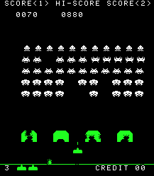

Space Invaders
What is that ?
Space Invaders adalah sebuah permainan arcade yang didesain oleh Tomohiro Nishikado, dan di rilis pada tahun 1978. Permainan ini awalnya dibuat dan dijual oleh Taito di Jepang, dan kemudian di lisensi kan di Amerika Serikat oleh Midway yang merupakan anak perusahaan Bally. Space Invaders adalah salah satu permainan tembak-menembak pertama dan menampilkan grafik 2D. Tujuan dari permainan adalah menembak seluruh alien dengan meriam laser dan membuat skor setinggi mungkin. Dalam membuat permainan, Nishikado ter inspirasi dengan permainan arkade lainnya: Breakout, The War of the Worlds, dan Star Wars. Untuk membuatnya, ia membuat perangkat keras dan alat pembuatan kostum.
Sejarah Game
Walaupun sangat sederhana untuk sekarang, ia adalah salah satu permainan video paling berpengaruh dan membuat industri permainan video dari barang baru menjadi sebuah industri global. Ketika di rilis untuk pertama kali-nya, Space Invaders sangat sukses, permainan ini membuat koin 100-Yen menjadi langka di Jepang, dan sejak tahun 2007 Taito telah mengumpulkan penghasilan sebesar 500 juta dolar Amerika. Guinness World Records meletakkan permainan ini sebagai permainan arkade paling populer.
Permainan ini telah menjadi inspirasi permainan video lain, dan dirilis di platform permainan video, yang kemudian merilis sekuel. Pada tahun 1980, Space Invaders versi Atari 2600 melipatgandakan penjualannya dan menjadikan "aplikasi pembunuh" bagi konsol permainan video. Alien musuh piksel telah menjadi salah satu ikon permainan video.
How to Play
Space Invaders adalah game shooter dua dimensi dimana pemain mengendalikan meriam laser dengan menggerakkannya secara horizontal di bagian bawah layar dan menembaki alien yang turun. Tujuannya adalah untuk mengalahkan semua alien yang bergerak secara horisontal bolak-balik melintasi layar saat mereka maju ke bagian bawah layar. Pemain mengalahkan alien, dan mendapatkan poin, dengan menembaknya dengan meriam laser. Karena semakin banyak alien yang kalah, gerakan alien dan musik permainan keduanya meningkat.